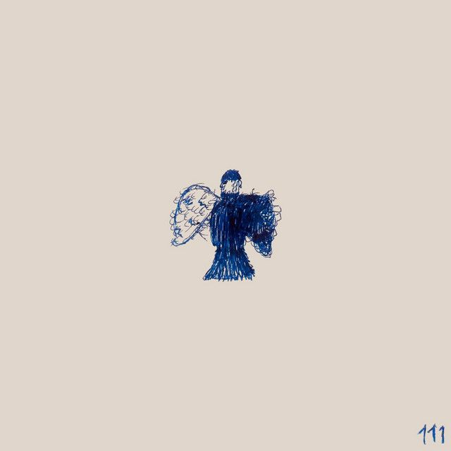

Top canciones
que me recuerdan a vos
Por fin te encontre (Con Sebastian Yatra)
"Cuando tú me miras, yo te miro y me muero
Nadie te quiero como yo te quiero
Nadie te ve como te puedo ver."
Carencias de cordura - Milo j y Yami Safdie
"Con vos entendí que nadie es perfecto
Por tus carencia' de cordura
Pero es que son tus mismos defectos
Que te hacen ser una ternura"

Machu Picchu - Camilo y Evaluna
"Cuando mis ojos te vieron casi me caigo, casi me, casi me muero
Cuando mis ojos te vieron, no solo te vieron, sino que al amor conocieron"
Sin principio ni final - Abel Pintos
"Quizá esta vida se termine dando cuenta
Que es ella sólo un momento de esta historia
Porque este amor no tiene tiempo, ni fronteras
Porque este amor va más allá de mi existencia"